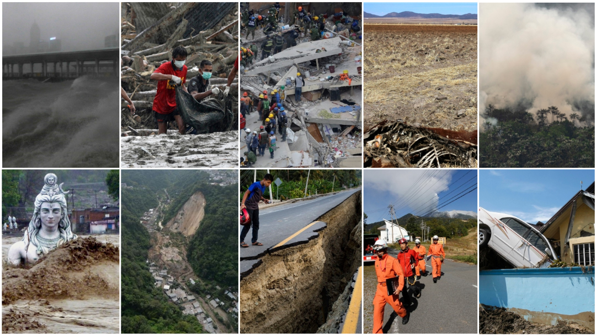
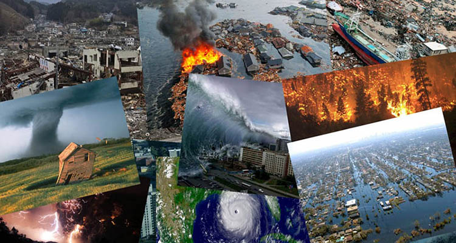
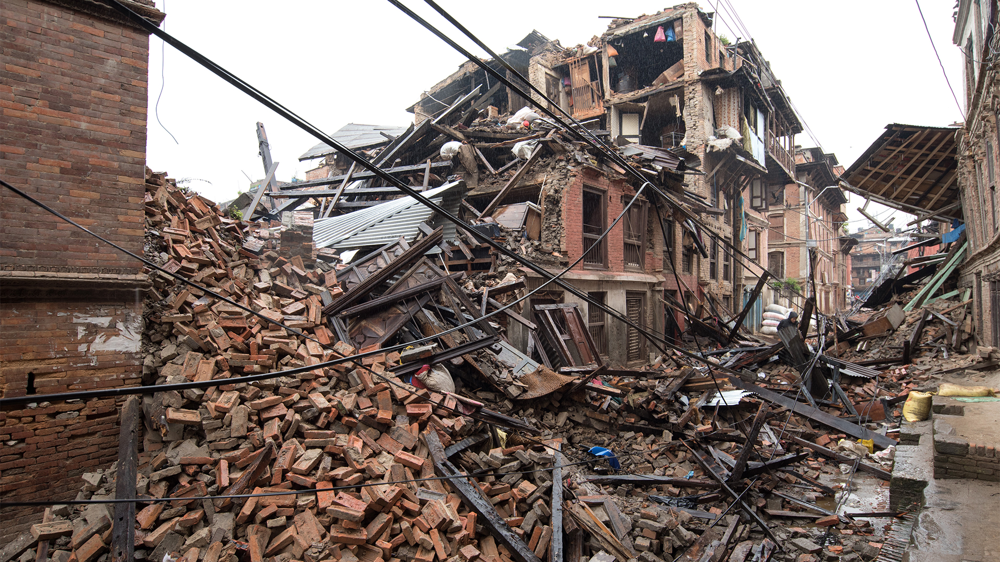
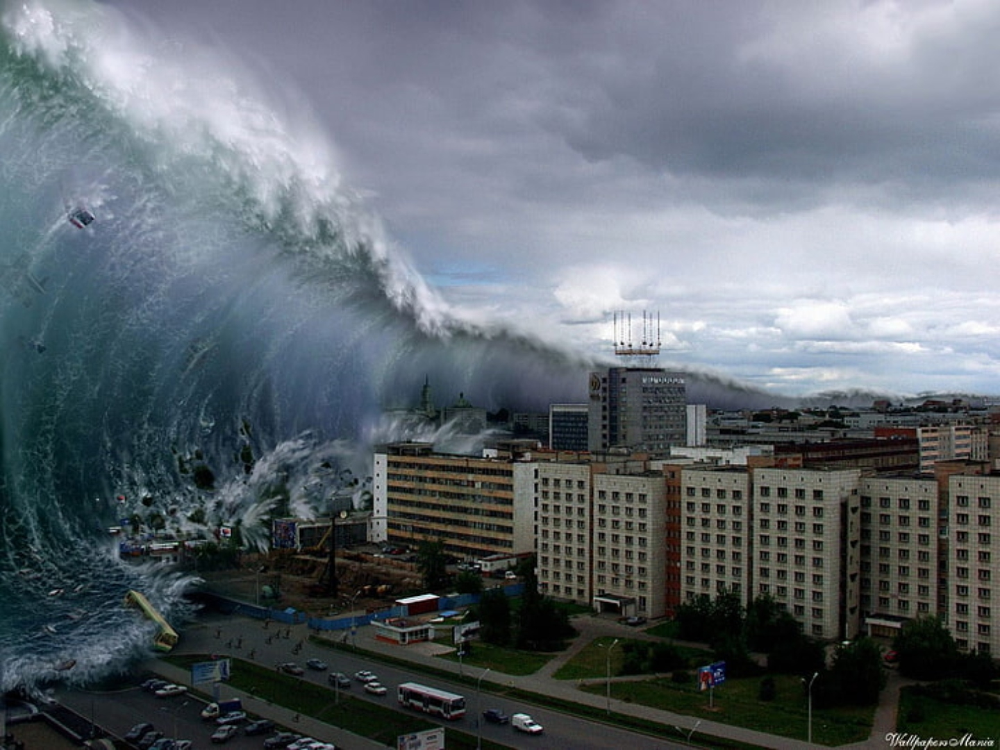
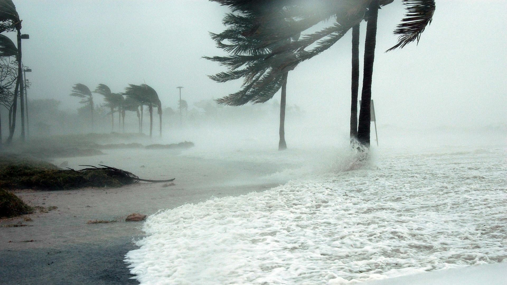
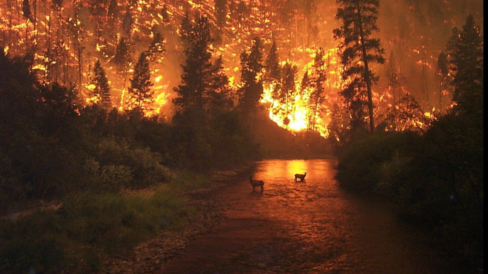

Desastres Naturales
Desastres naturales: que son, definición, tipos, características y prevención. El término desastre natural hace referencia a las enormes pérdidas materiales y vidas humanas ocasionadas por eventos o fenómenos naturales, como terremotos, inundaciones, tsunamis, deslizamientos de tierra, entre otros. Los desastres naturales son causantes de grandes pérdidas a nivel mundial cada año, tanto desde el punto de vista económico como desde el punto de vista humano y social. Los efectos de un desastre pueden amplificarse debido a una mala planificación de los asentamientos humanos, falta de medidas de seguridad, entre otros. Por otra parte, algunos desastres son causados únicamente por las actividades humanas.
De acuerdo con la (UNOFDRR), los desastres no son naturales, sino que son el resultado de las omisiones y la falta de prevención, y los desastres se presentan por la acción del hombre en su entorno. Por ejemplo: un huracán en la mitad del océano no es un desastre, a menos que pase por allí un navío. Los desastres naturales (como la lluvia, terremotos, huracanes y tsunamis entre otros) se convierten en desastres cuando superan un límite de normalidad, medido generalmente a través de un parámetro. Este varía dependiendo del tipo de fenómeno, pudiendo ser el Magnitud de Momento Sísmico (Mw), la escala de Richter, la escala Saffir-Simpson para huracanes, etc.



Terremotos
Un terremoto (del latín terraemōtus, a partir de terra, 'tierra', y motus, 'movimiento'), también llamado sismo, seísmo (del francés séisme, derivado del griego σεισμός [seismós]), temblor de tierra o movimiento telúrico, es la sacudida brusca y pasajera de la corteza terrestre producida por la liberación de energía acumulada en forma de ondas sísmicas. Los más comunes se producen por la actividad de fallas geológicas. También pueden ocurrir por otras causas como, por ejemplo, fricción en el borde de placas tectónicas, procesos volcánicos, impactos de asteroides o cualquier objeto celeste de gran tamaño, o incluso pueden ser producidas por el ser humano al realizar detonaciones nucleares subterráneas.
Un terremoto en el mar puede provocar un tsunami. Los tsunamis pueden ocasionar grandes pérdidas materiales y humanas en las zonas costeras pobladas, como sucedió en el terremoto y tsunami de Japón de 2011.
El punto de origen de un terremoto se denomina foco o hipocentro. El epicentro es el punto de la superficie terrestre que se encuentra directamente sobre el hipocentro. Dependiendo de su magnitud y origen, un terremoto puede causar desplazamientos de la corteza terrestre, corrimientos de tierras, maremotos (o también llamados tsunamis) o actividad volcánica. Para medir la energía que fue liberada por un terremoto se emplean diversas escalas, entre ellas, la escala de Richter es la más conocida y utilizada por los medios de comunicación.

Tsunamis

Un tsunami, sunami (del japonés 津 [tsu], 'puerto' o 'bahía', y 波 [nami], 'ola') o maremoto (del latín mare, 'mar', y motus, 'movimiento') es un evento complejo que involucra un grupo de olas en un cuerpo de agua de gran energía y de tamaño variable que se produce cuando se desplaza verticalmente una gran masa de agua por algún fenómeno extraordinario, por ejemplo, un terremoto, erupción volcánica, detonaciones submarinas, deslizamientos de terreno, desprendimientos de hielo glaciar, impacto de meteoritos, etc. A diferencia de las olas oceánicas normales producidas por el viento, o las mareas, que son generadas por la atracción gravitatoria del Sol y la Luna, un tsunami es generado por el desplazamiento de agua. Los tsunamis con olas desproporcionalmente altas se denominan megatsunamis.
Este tipo de olas desplazan una cantidad de agua muy superior a las olas superficiales producidas por el viento. Se calcula que el 72% de estos fenómenos son provocados por terremotos, en cuyo caso reciben el nombre más correcto y preciso de «tsunamis tectónicos». La energía de un maremoto depende de su altura, de su longitud de onda y de la longitud de su frente. Normalmente, en el caso de los tsunamis tectónicos, la altura de la onda de tsunami en aguas profundas es del orden de un metro, pero la longitud de onda puede alcanzar algunos cientos de kilómetros. Esto es lo que permite que aun cuando la altura en océano abierto sea muy baja, esta altura crezca de forma abrupta al disminuir la profundidad, con lo cual, al disminuir la velocidad de la parte delantera del tsunami, necesariamente crece la altura por transformación de energía cinética en energía potencial. De esta forma una masa de agua de algunos metros de altura puede arrasar a su paso hacia el interior.
Huracanes
Los huracanes son los fenómenos atmosféricos más violentos de nuestra naturaleza. Son un proceso natural del planeta Tierra para transportar el exceso de energía del área tropical a las regiones más frías.
Visto desde el satélite, estos remolinos o espirales gigantes de nubes y fuertes vientos alcanzan velocidades de más de 74 mph desplazándose sobre la superficie marina del océano hasta que tocan tierra o mueren sobre aguas más frías en las latitudes medias o polares.
Un huracán es parte de la familia de los ciclones tropicales. Cuando la nubosidad y vientos se organizan en circulación espiral alrededor de un centro definido de baja presión, con tronadas o tormentas eléctricas concéntricas alrededor de ese centro, se ha formado un ciclón tropical. El ciclón tropical se puede clasificar en Depresión Tropical, Tormenta Tropical y Huracán. Si los vientos del ciclón tropical no superan las 38 mph, el ciclón se conoce como DEPRESIÓN TROPICAL. A las depresiones tropicales se le asignan números en secuencia, por ejemplo, depresión tropical 6. Si el sistema cobra fuerza con vientos entre 39 a 73 mph, se conoce como TORMENTA TROPICAL. Al alcanzar categoría de tormenta tropical, se le asigna un nombre para identificarlo (por ejemplo, la tormenta Ernesto) el cual continua por el resto de la vida de ese ciclón. Cuando los vientos alcanzan 74 mph o más, y se observa un centro definido u ojo, entonces se ha formado un HURACÁN.

Incendios

Un incendio forestal es el fuego que se extiende sin control en terreno forestal o silvestre, afectando a combustibles vegetales, flora y fauna. Un incendio forestal se distingue de otros tipos de incendio por su amplia extensión, la velocidad con la que se puede extender desde su lugar de origen, su potencial para cambiar de dirección inesperadamente, y su capacidad para superar obstáculos como carreteras, ríos y cortafuegos.
Los incendios forestales son una de las formas más frecuentes de desastre natural en algunas regiones del mundo, como los países mediterráneos, Siberia, California o Australia.
Si bien las causas inmediatas que dan lugar a los incendios forestales pueden ser muy variadas, en todos ellos se dan los mismos presupuestos, esto es, la existencia de grandes masas de vegetación en concurrencia con periodos más o menos prolongados de sequía.
El calor solar provoca deshidratación en las plantas, que recuperan el agua perdida del sustrato. No obstante, cuando la humedad del terreno desciende a un nivel inferior al 30 % las plantas son incapaces de obtener agua del suelo, con lo que se van secando poco a poco. Este proceso provoca la emisión a la atmósfera de etileno, un compuesto químico presente en la vegetación y altamente combustible.